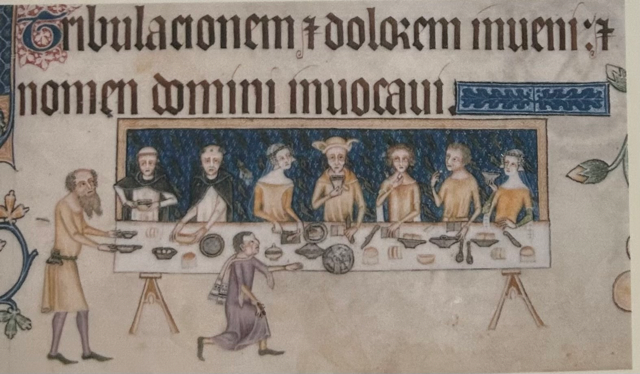
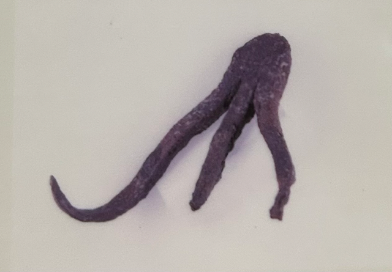
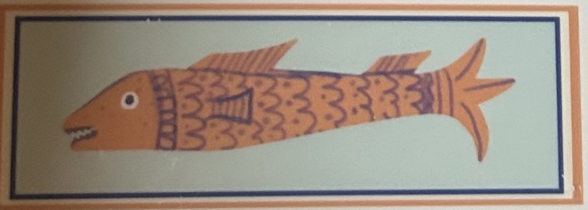
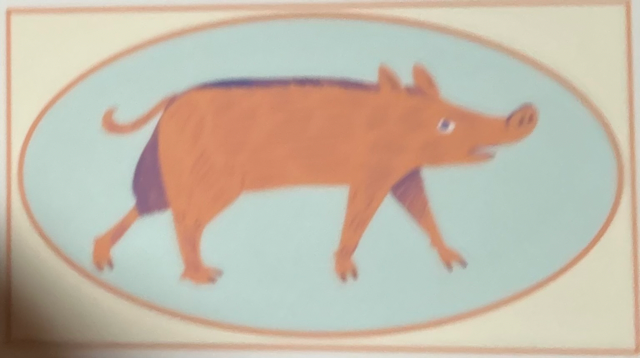

In Great Hall, where you sat meant everything. The family took pride of place at the head table, surrounded by their most honoured guests. The further down the table you were, the lower your social standing. Seating was a display of wealth, taste, and favour.
See? Servants brought food and drink.
The feast table usually featured meats like beef, pork, mutton, chicken, and even peacocks. Roasted birds were sometimes served with feathers reattached for decoration. Tools like flesh hooks helped lift hot meat from pots.
Flesh hooks were used to lift cooked meat. This one was probably made of wood.
Fish was central to the medieval diet, especially on fasting days like Fridays or Lent. But what counted as a “fish”? Surprisingly, beaver's tail qualified as fish simply because they lived in water.
In 1177, fish could be valuable.
Pigs were widely eaten but considered lower-class meat after the Norman conquest. Only piglets, or suckling pigs, were valued enough to appear at noble feasts. Pigs were also useful for cleaning kitchen waste.
😨⚠️A pig was put on trial and hanged for injuring a child.